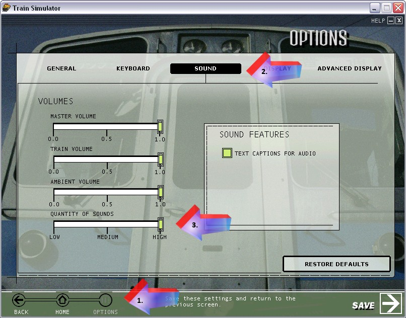

A Simple Way to Improve the Quality of Sounds in MSTS
by by Stuart "scefhwil" Williamson
Update by Carlo Santucci (July 2006)
Overview
The sounds a locomotive plays are defined in the .sms files that the .eng file of the locomotive points to. Sometimes, they are to be found in a subfolder "Sound" in the folder containing the locomotive, sometimes the .eng points to the sounds of another locomotive, or to a common sound folder shared by various engines (which is called "aliasing").
The .sms files also define the number and type of sounds (.wav files) that play with each setting of the sound quality sliders (called "Quantity Of Sounds" in Options | Sound).

- ScalabiltyGroup ( 5 ): the sounds that are available to be played when the slider is at maximum
- ScalabiltyGroup ( 3 ): the sounds that are available to be played when the slider is at medium
- ScalabiltyGroup ( 1 ): the sounds that are available to be played when the slider is at minimum
- ScalabiltyGroup ( 0 ): the sounds that are available to be playe the locomotive is used in an AI train (computer controlled traffic in activities), regardless of slider setting.
These settings were designed to enable playing of sounds in lower-end computers.
Since discovering the Sound Test Interface some of the 'innerds' of the Sound Management System (sms) have been exposed, and we users can benefit.
Did you know that regardless of your sound card (£5 or £100) the same resource setup is used? The main implication of this is that by default the sim uses 40 3D and 20 2D streams/voices/buffers (whatever the correct terminology is)ie the ability to play independant sound simultaneously. (Note: If your sound card suppords hardware accelaration then these buffers are used in preference over software ones).
That means max 60 simultaneous sound for all. Seems a lot? Well maybe for the default sounds but if you are using any of the loco/coach/wagon sounds I have been involved in developing then not. Player loco takes up 11, each coach 3, (10 coach train = 41), an AI loco 3, wagons in a passing train 2 each (20 wagon traffic = 43). Add to these background, environment, and track sounds, 60 ain't enough and sounds have to be dropped.
Well you can have more! If your sound set up is at High and performs ok then try the following. Go to the Global folder and make a backup copy of soundcfg.dat. Open the original one for editing (unicode stuff applies). Look for this line near the bottom
SoundSystem ( 5, 40, 20, 31457280 )
The 5 is the scalability (quality) level, 40 sets the 3D buffers, the 20 sets the 2D buffers. Leave the 20 as it is as the cabview sounds all require 2D buffers. Increase the 40. I have been using 200 for a good few weeks without any problems and no noticeable loss in performance. My line is
SoundSystem ( 5, 200, 20, 31457280 )
I don't know how many simultaneous sounds my sound card can play but it is more than 60 for sure. Maybe it's less than 200, but I can't tell.
Give it a go. Of course your PC spec will be different to mine so I can't guarantee anything, but I do only have a 1.33 Athlon, 512 Mb RAM and a £10 5.1 CMedia chip based sound card. If things go funny go back to the default settings.
I have deliberately avoided making a specific claim about improvement because the degree will depend on a number of factors. If you are using sounds that are (in terms of the sms complexity) closer to the default setup then benefits will be less. It may also be sound card dependant, but as I only have one, cheap, sound card I can't make much of a judgement. Personally I have found it a great improvement. I can have my player loco sat in a station and have both a frieght and a passenger train pass by. I can hear noises from each loco, coach and wagon. This would not be the case with the default setup.
I have only said to increase the level 5 sounds to 200 because I reckon that if you aren't able (or choosing) to run the sims sounds at their highest level anyway then why try to improve them. If you look at the default sms's you will see that as a rule SG5 has more streams defined than SG3 which has more than SG1 which has more than SG0. (Note: SG2 and SG4 aren't used by MSTS). But, that said, there should be an improvement in terms of more simultaneous sounds being played for all the SG levels.
You might also notice that by default the only difference between the SG levels is the last number in the SoundSystem() line. This specifies the amount of memory allocated to the sms system. From my observations so far in the Sound Test Interface the 30Mb (ish?) specified for SG5 is more than enough. But I have a highly aliased sound setup (ie no duplication of wav files occurs) so my observations may not be representative. I have happily run my system with 64Mb allocated to SG5 and had no stability or performance problems.